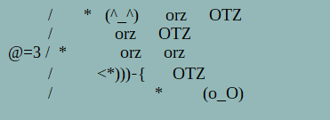

Winter 2021 Sammy Umezawa
A turn-based tower defence/attack game displayed on the terminal; one player moves a vertically manoeuvrable cannon and defends the left side of the screen, while another player sends various emoticons from the right towards the left of the screen. The tower wins a different number of points for each type of attacking emoticon, and for each turn survived. When an emoticon reaches the left side, the tower's health decreases. The game ends after the tower's health reaches 0. The LCD screen (separate from the discovery board) displays the defender's score, the tower's health, or event-based messages (like 'game over').